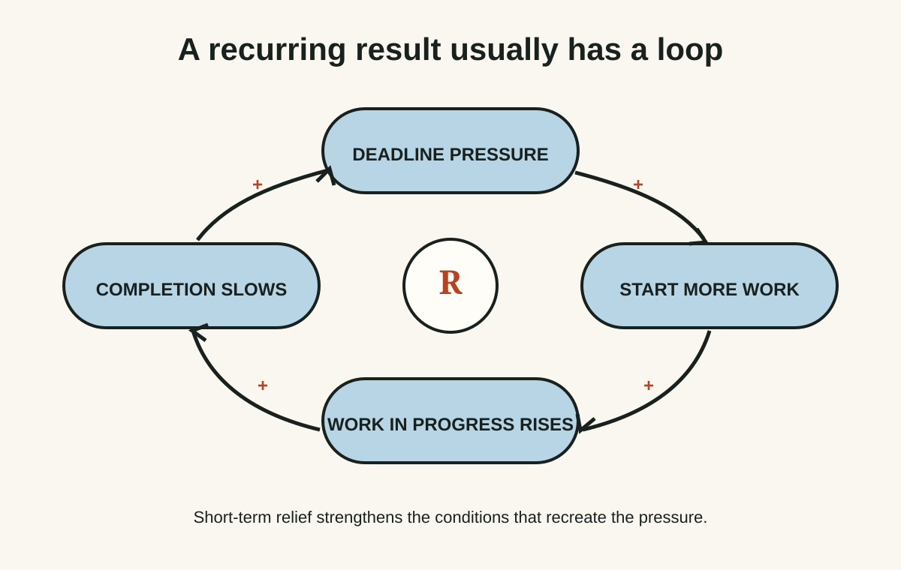
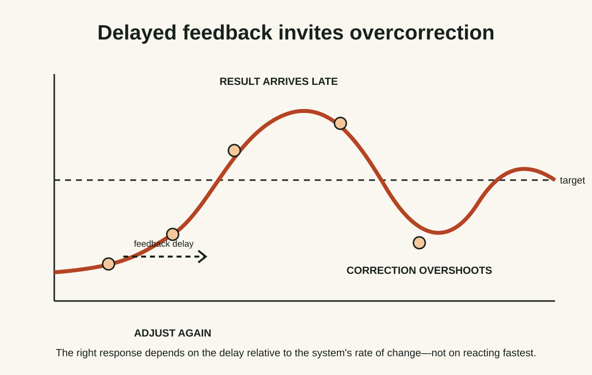
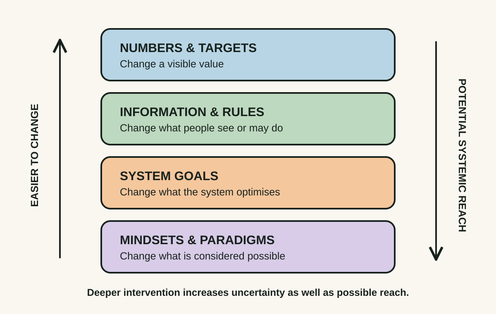

Launch bonus ·
Thinking in Systems
A compact language for seeing the structures beneath recurring events—and finding interventions with more leverage than another local fix.
Idea 1
Events are the surface, not the system #
The idea
Meadows defines a system through elements, interconnections and a function or purpose. Its behaviour over time emerges from stocks, flows, feedback loops and delays—not just from the latest visible event.
When a pattern repeats, explaining the most recent incident may be true but incomplete. The stronger question is what structure keeps making this class of incident likely.

Why it matters
Incident fixes matter, but a recurring pattern normally changes only when the structure producing it changes. Seeing the loop prevents repeated blame from masquerading as analysis.
Apply it today
Choose one recurring delivery problem and draw four nodes: trigger, action, short-term benefit and delayed consequence.
Add the arrow that makes the original trigger more likely next time. That arrow is often where the system stops looking like a sequence and starts looking like a loop.
Caveat or failure mode
A tidy diagram can omit power, incentives, emotions and external constraints. Treat the map as a testable model, not as the system itself.
Reinforcement questions
- Why is a recurring pattern stronger evidence of system structure than a single event?
- A release fails, so management adds another approval; releases then become larger and riskier. What reinforcing loop might be operating?
Idea 2
Delays create surprises #
The idea
Meadows shows that feedback often arrives after a delay. A decision can be sensible and the system can be responding correctly while the result remains invisible for days, months or years.
When decision-makers react faster than the system can reveal consequences, they overshoot, reverse too late and create oscillation. Delays are therefore part of the causal structure, not administrative detail.

Why it matters
Teams often over-correct because the last intervention has not had time to work. Naming the delay improves pacing and helps separate an early signal from the real outcome.
Apply it today
For one current product or process change, write the earliest date you expect a leading signal and the earliest date the customer or business outcome can be judged.
Decide in advance what evidence would justify intervening before the second date.
Caveat or failure mode
Waiting can become an excuse for inaction. When harm is large or irreversible, use guardrails and leading indicators rather than waiting passively for lagging outcomes.
Reinforcement questions
- How can a delay make a correctly responding system appear unresponsive?
- A team changes onboarding and daily activation drops for two days while 30-day retention is the goal. What should it monitor before reversing the change?
Idea 3
Change the rules before pushing the people #
The idea
Meadows' leverage-points framework ranks places to intervene. Parameters such as numbers and budgets can matter, but information flows, rules, goals and paradigms can reshape many downstream decisions at once.
The ranking is a heuristic, not a promise that deeper intervention is easy. Systems often resist changes near high-leverage points precisely because those places organise power and behaviour.

Why it matters
A rule, information channel or goal can change hundreds of local choices without supervising each one. That is leverage: changing the conditions under which decisions make sense.
Apply it today
Choose one behaviour you keep requesting from a team. Write what the current metric, approval rule or information flow rewards instead.
Propose one reversible change to that condition and name the side effect you will watch.
Caveat or failure mode
High leverage also means high blast radius. Change rules and goals with the people living in the system, test reversibly where possible and monitor unintended adaptation.
Reinforcement questions
- Why might changing an information flow have more leverage than increasing a target?
- A service desk is rewarded for tickets closed, while repeat contacts are invisible. What rule or information change would you test first?
Today's experiment · 8 minutes
Draw one loop, not one blame story
- Choose a frustrating result that has happened at least three times.
- Draw four boxes: trigger, action, short-term benefit and later consequence.
- Add the arrow showing how the consequence makes the trigger more likely.
- Mark one delay and one piece of missing information in the loop.
Observable result: You finish with one causal-loop hypothesis and one observation that could prove it wrong.
Verification
Source notes
These links support the attributed claims and edition details; applications and extensions are labelled in the lesson.
One-sentence takeaway